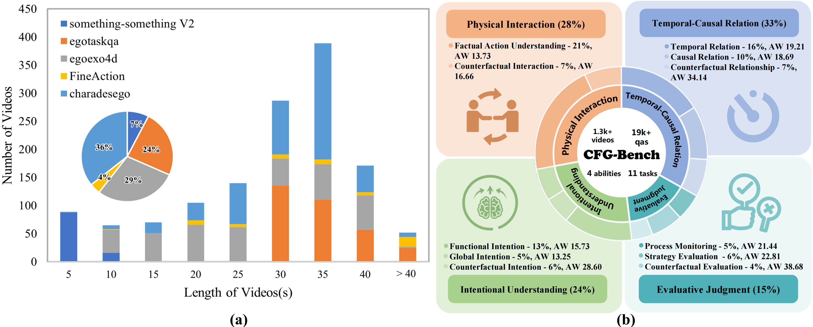
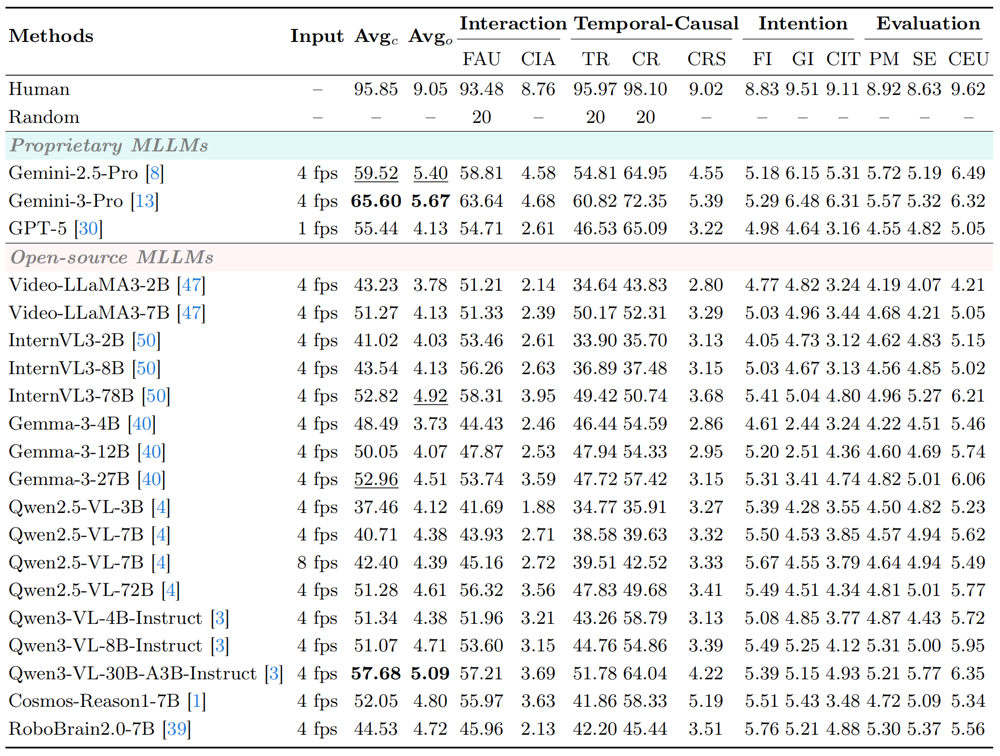
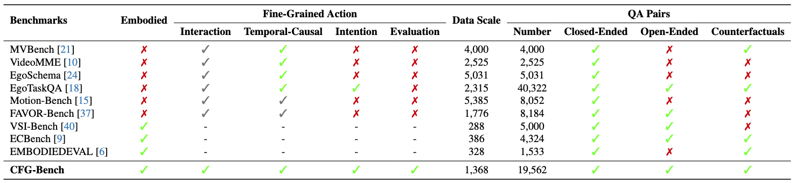

What happened?
场景识别、动作分类、粗粒度第三人称描述。
FINE-GRAINED EMBODIED COGNITION / 代表工作 01
Cognitively Benchmarking Fine-Grained Action for Embodied Agents
CFG-Bench 不再只问模型“看见了什么”，而是进一步评估它能否理解物体如何被操作、 动作为何发生，以及执行是否正确——将视觉观察真正转化为具身智能体可使用的行动知识。

THE CENTRAL QUESTION
现有具身 Benchmark 多聚焦高层规划、空间推理，或以第三人称粗粒度描述动作；但真实物理交互要求模型进一步理解 接触方式、操作顺序、因果关系、行为意图与执行质量。CFG-Bench 将这一被忽略的“细粒度动作智能”定义为独立评测对象。
核心目标不是增加另一套题库，而是建立一条从物理细节到高阶判断的认知阶梯，检验模型能否把视频内容转化为可执行、 可解释且可评价的具身知识。
场景识别、动作分类、粗粒度第三人称描述。
面向真实交互的物理细节、因果意图与执行评价。
FOUR-TIER COGNITIVE FRAMEWORK
四层能力并非平行标签，而是一条由动作事实走向高阶认知的递进链：先理解如何交互， 再重建时间与因果，进一步识别意图，最终判断行为是否有效。
识别动作执行中的接触、受力、方向、姿态与操作细节。
HOW理解动作的先后关系、状态变化以及事件之间的因果依赖。
WHEN / BECAUSE从细粒度行为与上下文中推断执行者的目标与潜在意图。
WHY判断动作是否正确、有效、完整，并识别失败与改进空间。
HOW WELL
DATASET & EVALUATION DESIGN
从多源视频筛选、细粒度动作描述到三模态 QA 构建，数据体系围绕“可用于物理交互的知识”展开， 并通过开放式生成与封闭式判断共同测量模型能力。
筛选 1,368 个具有清晰物理交互过程的视频。
构建包含动作对象、接触方式与状态变化的细粒度描述。
形成覆盖四层认知能力的 19,562 个三模态问答对。
联合开放式回答与封闭式选择，比较模型与人类表现。

WHAT THE EVALUATION REVEALS
对领先 MLLM 的系统评测表明：模型可以识别显著动作，却仍难以给出足够细致的物理交互指令； 随着任务进入意图理解与评价判断，能力缺口进一步扩大。
生成结果往往停留在动作概述，缺少接触、方向、姿态与操作过程等可执行细节。
模型在意图理解和评价判断上的局限更为显著，难以稳定解释“为什么”与“做得如何”。
使用 CFG captions 进行 SFT，可将更精细的动作表达能力迁移到既有具身 Benchmark。


MY CONTRIBUTION
主导研究问题定义、四层认知框架、Benchmark 与三模态问答体系设计，并推进数据构建、质量控制、实验方案、 模型评测、SFT 验证、结果分析以及论文与网站落地，形成从研究假设到公开评测资源的完整闭环。
定义细粒度动作智能缺口，并构建四层认知能力与 11 类任务体系。
设计数据、三模态 QA、评测协议、模型基线与结果分析流程。
完成质量控制、MLLM 评测、CFG-caption SFT 验证与公开资源落地。
具体数据标注由外包团队执行；本人负责标注规范设计、任务拆解、团队培训、过程审核与质量验收， 对最终数据质量和认知任务一致性负责。
OPEN RESEARCH INFRASTRUCTURE / 006
本页研究图表来自 CFG-Bench 官方项目页； 数据集按官方 CC BY-NC-SA 4.0 条款发布。